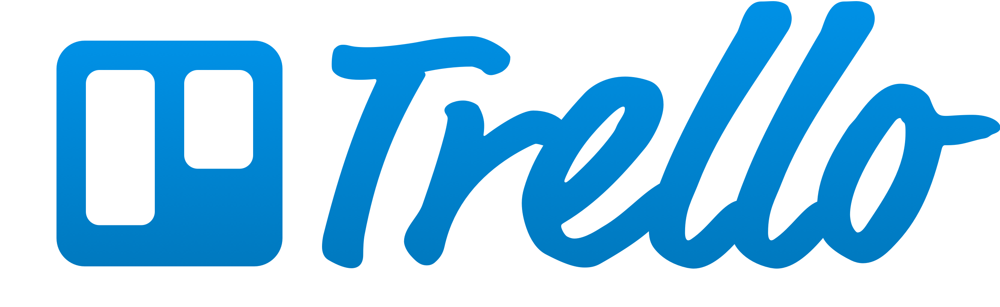

by: Luís Eduardo
O que ser Slack?
"Slack é onde o trabalho flui. É onde as pessoas que você precisa, a informação que você compartilha e as ferramentas que você usa juntam-se para fazer as coisas."
Mas por que usar Slack?
Integração com outras ferramentas;
Compartilhamento de código/documentos;
Time integrado;
É grátis;
É multiplataforma!
Algumas ferramentas disponíveis no Slack
Loja com vários app's que podem ser integrados ao Slack
Ferramentas de pagamento para auxíliar em eventos ou coisas do tipo!
O Slack permite integração com vários tipos de bot's para auxíliar no desenvolvimento de várias atividades!
GitHub no Slack

Trello também!
Visão geral do Slack...
Criar canais permite dividir o time e alocar cada um em seu devido setor.
Usem Slack, ele é legal!